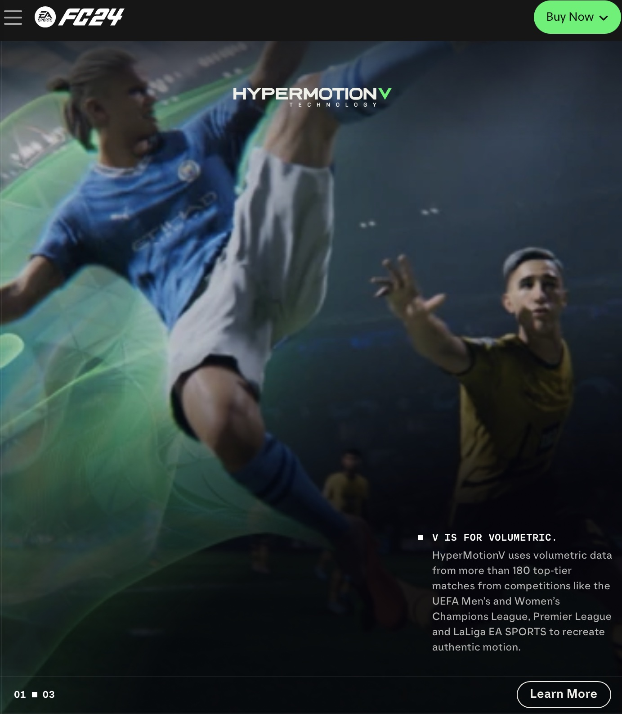
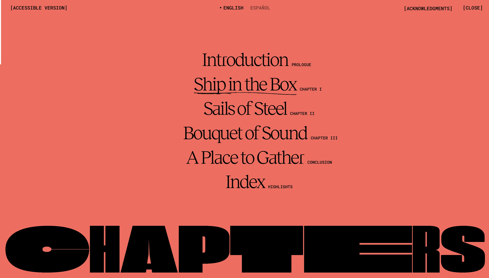
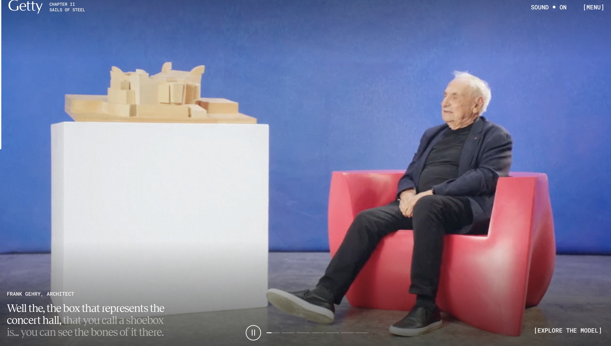
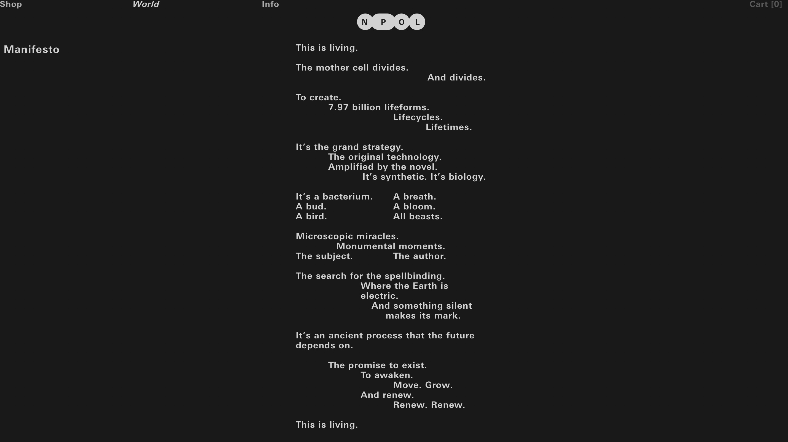
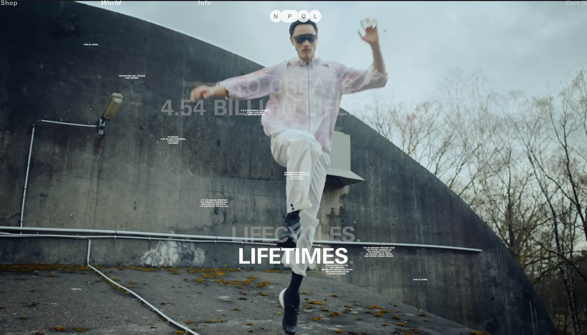

This website is for the newest edition of the EA Sports video game FIFA; a game surrounding playing football. The website uses video as a a media to visually demonstration the advancements of the games graphics, as well as highlighting new features and technologies that come with the game.
For example, as you scroll down the page you are given a selection of short videos (5-10 seconds) of a clip of real game footage. This clip then stops in a freeze-frame and text appears describing the new features it just demonstrated. This is an extremely effective use of both text and video. You are given a short demonstrative clip, not too long to lose attention, and are followed by short, informative, and relevant text. This appeals to multiple types of learners. Additionally, as a tool for selling a product, giving the user (a potential customer) a highlighted, visual insight into what they could buy is an effective mode of marketing.
This website explores stories surrounding the architecture and structure of sound for Frank Gehry's acclaimed Walt Disney Concert Hall in Los Angeles. This website is a prime example of intrinsic multimodality, combining audio, image, text, and video all in one section.
(An important addition is the inclusion of an accessible version, at top left corner, of this rather complex storyline idea.)
Each chapter uses video or moving images in different ways. Chapter 2 for example Has a video of the architect of the video as he answers interviewers questions about the structure of the building, whilst sat next to a architectural model of the concert hall. Included further into the chapter is an interactive 3D model of the Architectual model.
This use of multiple medias, including the text captioning the words of Frank Gehry, create an extremely appealing form of displaying information. It is almost like an interactive, YouTube video. However this could have caveats, as on average viewers have shorter attention spans. So too, providing a long video such as this, viewers may skip sections and miss vital information. Additionally they may just want specific information and not everything available, which is hard to pin point in video format. Therefore, additional textual formats would be effective, as this page is predominantly video based. However, this website does accommodate for people seeking certain information by including an index, directly linking subjects to its place of information on the page.
This is a website for products such as clothes and skincare that focuses on a new, eco-friendly way of running online shops. The website is effective in portraying its innovative, ground-breaking, normality-bending approach to sustainable fashion.
One use of video is through its manifesto, in which it emphasises their care for the climate. The manifesto is as follows:
This is an example os text, and how its format, positioning and meaning can display information. Through this poetic tone and atypical structure, its meaning is further emphasised. However, what the website does next as you scroll is displays a video with serene instrumental audio, with a voiceover reciting the manifesto. The video displays artistically and abstractly different products the site sells, as well as conveying a message and asserting what its brand.
Another prime example of how the infusion of different multimedia's work well together to create an impactful, informative piece of media. And in this example, the information is not necessarily blatant facts, its more educating the user on the brands image, beliefs and aims, in an optional format (the user is not forced to watch it).
CONCLUSION:
Concluding these evaluations, my main takeaways regarding effective use of video on websites is that the incorporation of other multimedia's alongside is near essential in order to effectively enhance information comprehension, retention, and appeal. The shorter the video, the better, I would argue. However, giving it as an option, and not using it as a strict narrative guide is also important as to appeal and accommodate to majority of users.
The first video I made myself. Its aim would be more similar to the way video was used in the second website example.
It is a short, hypothetical, clip used to inform/ spread awareness of the dangers of social misinformation and fake news.
This is a rough example to gauge an idea of how scenario clips as such can be used. However, the final product for my official website would be of better production quality. It would include more preparation, and a clearer narrative.
I also accompanied my audio from week 8 to display the impact of combining multimedias.
The other video is a free stock video created by Carlos Arribas, available at: Pexels
This would be used in the accompaniment of other formats of multimedia such as text and reduced audio.
I think the second use of video is more effective on a website in diversly comprehension of information. However, the first is a more elaborate, creative project I originally had.
My edited versions are available on the next page at Week 9's Lab Activity.